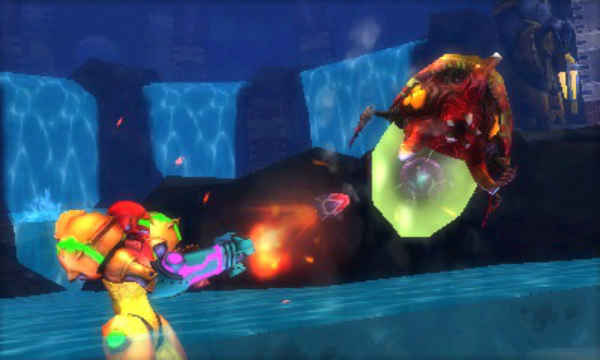
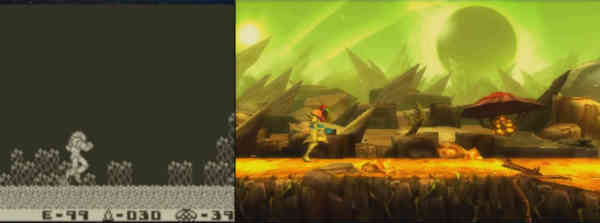

Metroid: Samus Returns is a side-scrolling action-adventure video game developed by MercurySteam and Nintendo. It was published on the 15 of September 2017 for the Nintendo 3DS handheld game console.
This entry in the Metroid game series is a remake of the original Game Boy game Metroid II: Return of Samus that was released on 1991.
The story and structure are similar to Metroid II, but the game adds new controls, visuals and gameplay. In that sense, this new game could be considered as a reimagining of the original game, as oposed to a simple remake with just graphical updates.
The images below show a graphical comparison between both versions. The images on the left show a screenshot of the original game, while the images on the right depict how the same areas have been reworked in the remake.
As said previously, Metroid: Samus Returns not only improves the graphical aspect of the game, but it also adds new mechanics and possibilities. The following table shows the main differences between the original game and the official remake.
| Original (Metroid II: Return of Samus) | Remake (Metroid: Samus Returns) |
|---|---|
| 2D Graphics | 3D Graphics |
| Cardinal Aim | 360º Aim |
| No Special Abilities | Aeon Abilities |
| No Cutscenes | Story Cutscenes |
| No Map | Interactive Map |
Useful and informational links, such as the Wikipedia pages of both games and different buying options for the new game, are provided below: